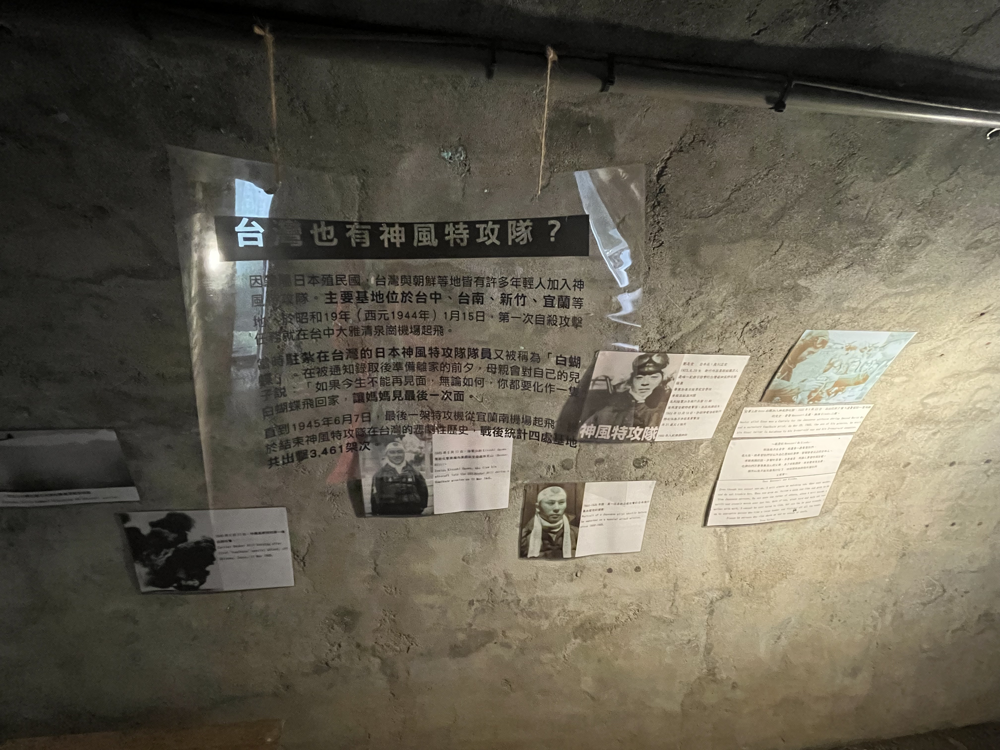
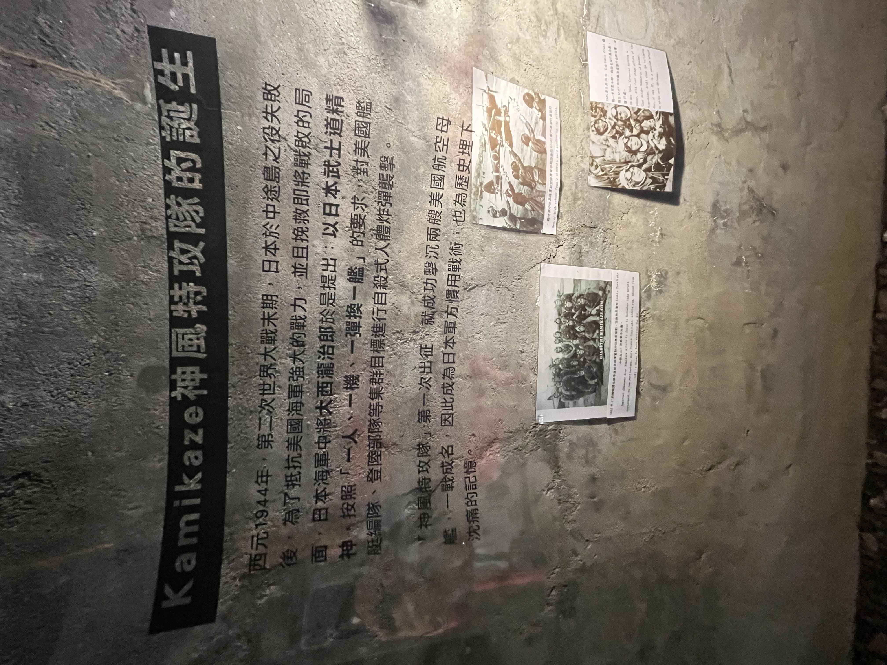

時空掩體：地下避難所紀實
這座地下防空洞興建於 1942至1943年，是松園別館歷史中最幽暗、也最沉重的戰時見證。

第一步
掩體入口處
厚實的洗石子階梯向下延伸。這裡是當時軍方高層在面臨美軍劇烈轟炸時，最核心的避難與指揮空間。

第二步
觀測隧道內部
內部保留了斑駁磚牆與厚達 四公分 的防爆鐵門遺蹟。空氣中凝聚著沉重的戰時氛圍。

第三步
台灣神風紀實：白蝴蝶的悲壯告別
在太平洋戰爭末期的台灣，特攻隊員被稱為「白蝴蝶」。這段紀實錄始於 1944 年 1 月 15 日，持續到 1945 年 6 月 7 日，全台出動高達 3461 架次。

第四步
神風特攻隊的誕生
西元 1944 年，日本於中途島戰役失利後，大西瀧治郎中將提出了「一機換一艦」的瘋狂構想。
🔍 影像皆經 4k 高畫質處理 [cite: 2026-02-10]